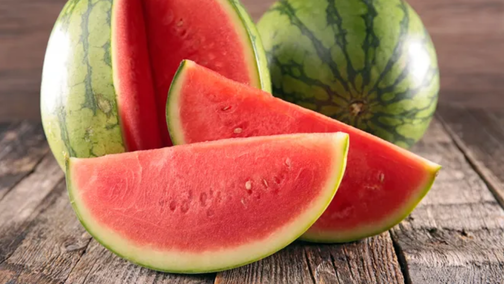
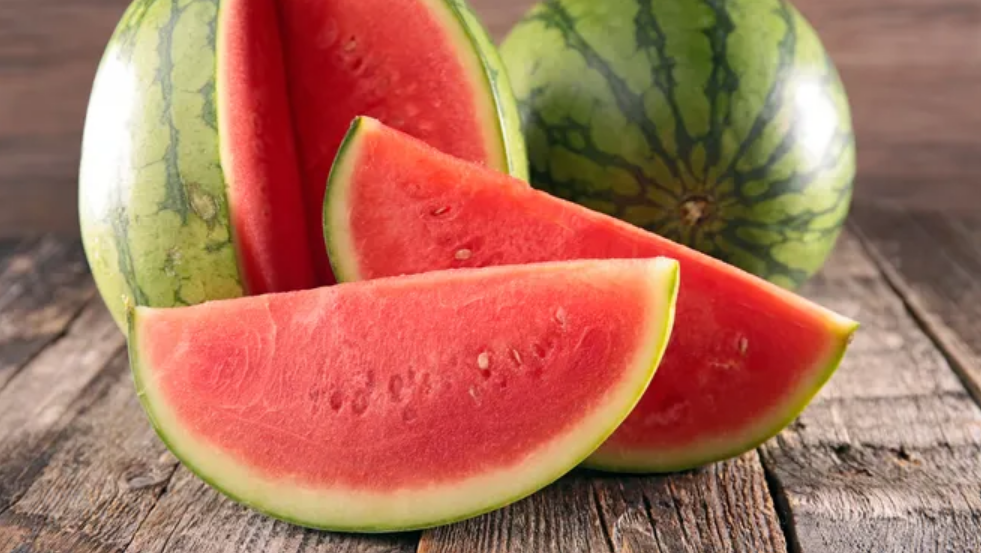

Languages I speak:
• Cantonese
• Chinese
• English
Favourite music:
1. Spring (Four Seasons) by Antonio Vivaldi
2. Doll's Dream by Theodore Oesten
Literature:
My favourite books are: Harry Potter and Warrior Cats.
My favourite quotes are: "for success, attitude is equally as important as ability." and "it is nice to be important, but it's more important to be nice."


I see myself as an epicure, and my favourite food include:
1. ramen 2. watermelon 3. mango sago 4. red velvet icecream
1. ramen 2. watermelon 3. mango sago 4. red velvet icecream
 



Festivals and Holidays
My favourite festival is Christmas. It is a Christian festival celebrating the birth of Jesus. December 25 is the universally accepted date for Jesus' birth date.
The traditions of celebrating Christmas include: singing Christmas carols such as "Silent Night" and "Jingle Bells". Other traditions are: sending Christmas cards, decorating Christmas trees, exchanging gifts, sharing meals with family and friends and waiting for Santa Claus.

History and Geography
My favourite historical locations are: The Pyramids of Giza. The pyramids look flawless. I admire the great work of the Egyptians. My second favourite historical location is The Colosseum and Forum. It is located in Rome, constructed under the Roman emperor Vespasian during 70 and 72 CE.

Fashion and Design
I'm interested in all kinds of architecture in general. However, my favourite type must be interior design architecture. I love the different styles of interior designs. For example: modern (used clean and simple colour schemes), traditional (extensively used colours and materials, tends to be symmetrical) and minimalist (simple but functional).